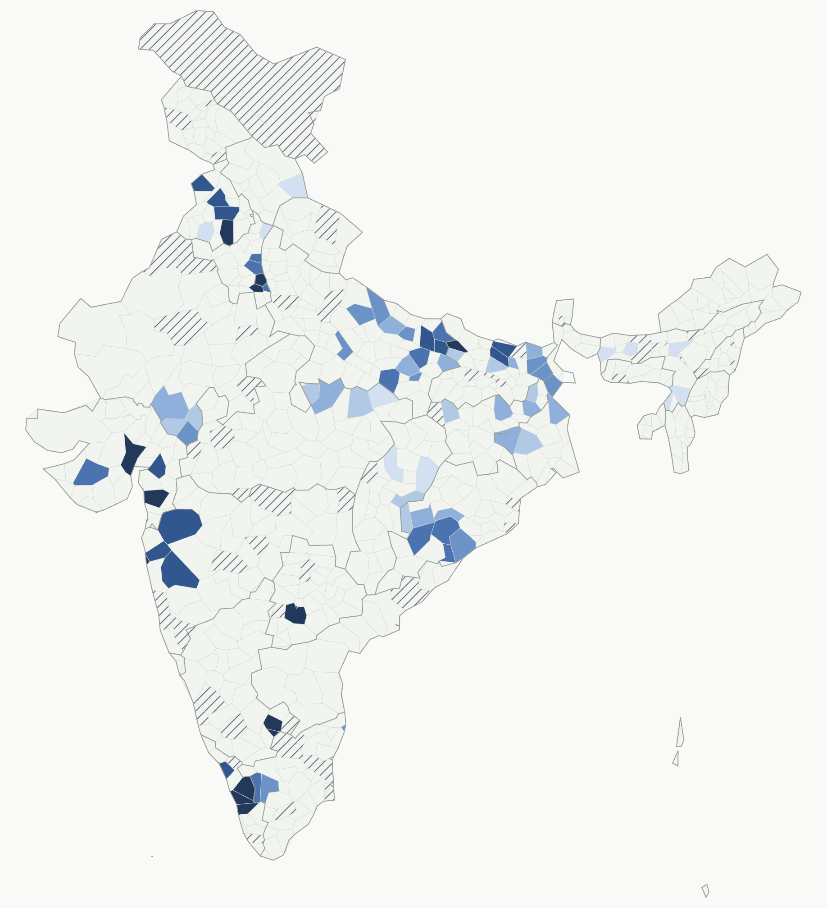
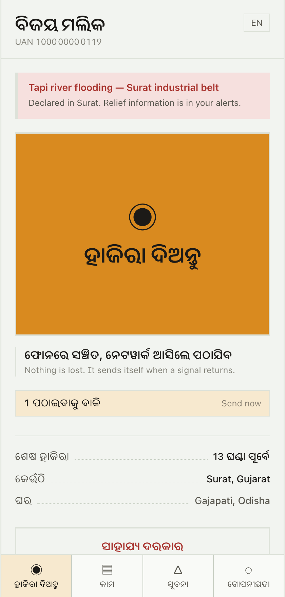
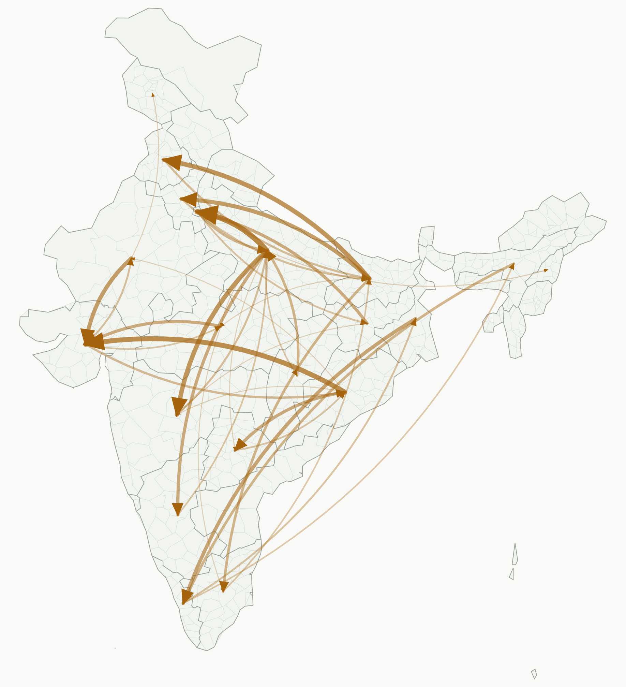
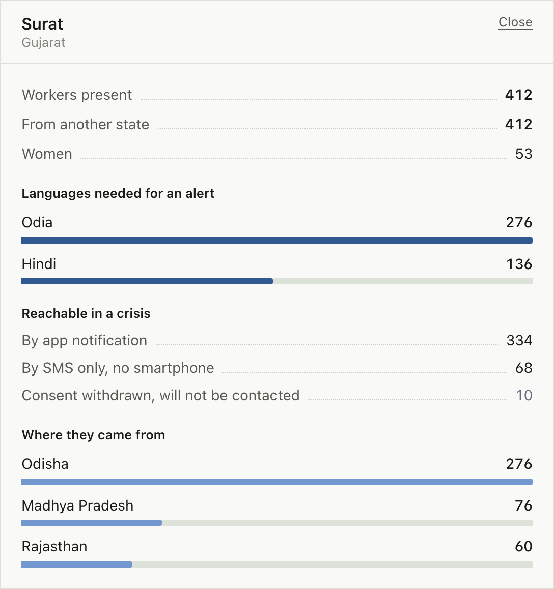
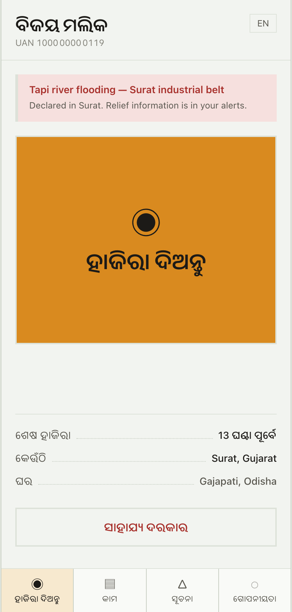

It records a worker once at enrolment, against a home address. They migrate; the record stays. Welfare goes there and never arrives.
So this is not tracking. It is presence the worker switches on, because it pays them back.

Offline first. Attestations queue on the device and send themselves when a signal returns. 28% arrived that way.


412 present, every one from another state. 276 need the warning in Odia, not Gujarati. 68 have no smartphone.
And 10 withdrew consent, so the system does not contact them — even in a flood. A consent switch that bends in an emergency was never consent.

